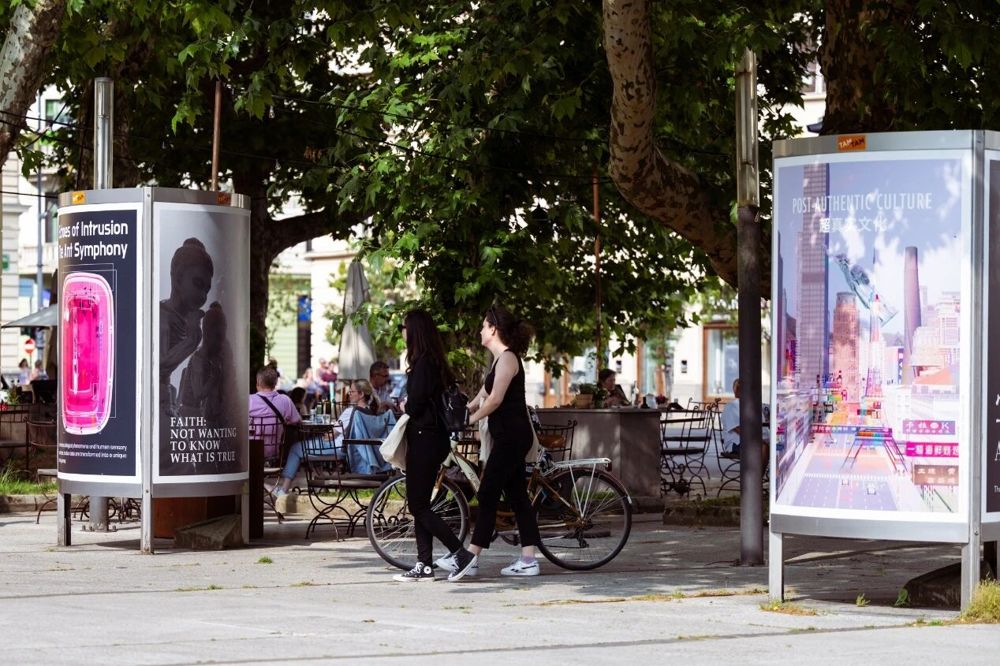

This experimental animation was inspired by a trip to Shanxi, where I observed people tossing coins toward the feet of a Buddha statue. I was struck by the transactional feel of their prayers—as if the imposing figure had become a means to fulfill personal wishes. Behind this grand statue stood rows of smaller stone Buddhas, known as the "figures of all beings," suggesting that anyone can attain enlightenment. It occurred to me that Buddha-nature might already be present within each person there. That led me to wonder: If people truly recognized that Buddha-nature lies within themselves—not in statues or external authority—would they still pray this way? Does Buddha pray?
To explore this, I merged a Buddha's head with a skeletal body, creating a scene in which a group of small skeletal Buddhas prays to a larger skeletal Buddha.
This experimental animation received the 2025 European Design Awards and was exhibited at the TAM Figovec Outdoor Gallery in Ljubljana, Slovenia.